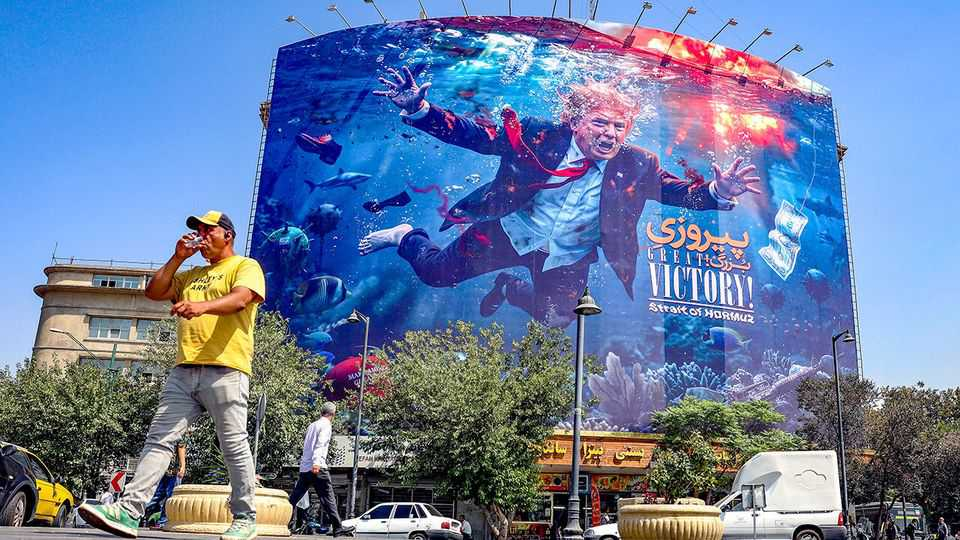

Iran will be able to shrug off America’s financial threats
In the face of fresh sanctions, the regime is defiant

Aug 27th 2026
WHEN DONALD TRUMP began Operation Epic Fury nearly six months ago he hoped that America’s military might would crush Iran’s regime. When its bombs failed, he bet on sweeteners. In June America offered Iran sanctions relief and billions of dollars in investment in the hope the country’s leaders would open the Strait of Hormuz and renounce any nuclear ambitions. That approach failed, too. So Mr Trump has vowed to break the regime by smashing Iran economically. He said the effort would be an “economic D-Day”. But when Scott Bessent, the treasury secretary, revealed the details on August 24th, his threats rang hollow.
Iran has been under American sanctions since the Islamic revolution in 1979. In his first term Mr Trump exerted what he called “maximum pressure” on the regime in an effort to force concessions on its nuclear programme. The new campaign, dubbed Operation Economic Outcast, is presumably maximum plus. As well as enforcing its blockade of Iranian oil exports, America will increase pressure on Iran’s trading partners and on institutions that help the regime move money. But the threats were more bark than bite. Countries will not have to comply with America’s demands immediately. The treasury secretary conceded it was “a warning shot”.
Iran is in dire economic straits. The rial has lost around a third of its value against the dollar since January. It hit an all-time low ahead of Mr Bessent’s announcement, though it later rebounded a little. The war has destroyed great chunks of Iranian industry. Damage to refineries has left fuel in short supply, leading to long queues at petrol stations. Inflation is running at 88% year on year. The regime is printing money to pay for food vouchers.

Meanwhile, America’s blockade of Hormuz has caused Iran’s oil exports—the regime’s main source of income—to collapse. On August 20th the head of Iran’s central bank said they had “fallen to zero”. According to Kpler, a trade-intelligence firm, Iran still has some 80m barrels of oil on board ships outside the strait. But that would only provide a fraction of its usual income from such exports.
Mr Bessent did not name the countries that he wants to reduce trade with Iran. But several stand out. Before America’s blockade, China had been buying Iranian oil at $7-12 below the market price for a barrel, sidestepping the existing American embargo. Last year it scooped up about 90% of Iranian crude exports, which, America reckons, provided the regime with nearly half its budget. The United Arab Emirates (UAE) sells more to Iran than any other country. It provided some 30% of Iran’s total imports in 2024. It also hosts shadow banks that the regime uses to evade sanctions. In April the American Treasury reportedly wrote to the UAE’s leaders to ask them to close such outfits.
America is not the only country trying to inflict economic pain on Iran. Over the past few months the UAE had softened its stance towards Iran, resuming trade and allowing Iranian residents to return. But on August 18th it said it would stop all trade and financial transactions with Iran after the regime launched strikes against its ships. Mr Bessent called the Emirates “a very good partner”. But its financial system is opaque. Iran’s transactions are often disguised using shell companies, so money may keep flowing despite the UAE’s ban.
Others will openly resist American pressure. China has warned that the new sanctions risk damaging global growth and financial stability, and vowed to protect its “legitimate rights and interests”. America has previously targeted Chinese firms involved in Iran’s oil trade; in April it imposed sanctions on Hengli, a refiner that American officials accused of buying billions of dollars’ worth of Iranian crude.
But it may be reluctant to go further for fear of retaliation or of undermining Mr Trump’s diplomatic outreach to China. “If you start to target Chinese companies, it’s no longer an Iran issue,” argues Esfandyar Batmanghelidj of Bourse and Bazaar, a think-tank in London. “It’s a matter for your China policy.” And even if America imposed secondary sanctions on big Chinese banks, Iran might still transact with China using its own payment systems.
Iran’s leaders have greeted the threats with derision. Mohammad Bagher Ghalibaf, the speaker of parliament, mocked American talk of “D-Day” on social media: “This ain’t Normandy.” Mohsen Rezaei, Iran’s hardline national security adviser, dismissed Mr Trump’s threat of economic warfare as “propaganda”. He asked, not without some cause: “What does he want to do that he has not done before?” The regime would be in trouble if further economic hardship prompted demonstrations of the kind that erupted in January. But for now, that seems unlikely. Iran has been executing protesters in public.
Iran’s leaders view America’s pivot to economic coercion as proof that their foe has no desire to continue its failed military campaign. That could embolden Iran to launch new attacks, in an attempt to get concessions from Mr Trump. Mr Rezaei has said that any country that works with America will be treated as an “enemy” and could be targeted. Iran has considerable leverage over its neighbours such as Iraq, which buys its gas and hosts several of its armed proxies. And there is always Hormuz. Hours before Mr Bessent’s announcement, Iran threatened to fine or seize nearly 50 ships in the strait, which it accused of breaking its rules for crossing.
The regime’s leaders know well that their economy is struggling. Mr Ghalibaf has conceded that Iran will “not survive” without economic growth. Masoud Pezeshkian, the president, has urged America to return to the Memorandum of Understanding (MoU) that it offered in June. This set out a framework for ending the fighting and promised to reintegrate Iran with the global economy. The Iranians do not want to end up in a situation like that of North Korea, says Mr Batmanghelidj, “where they continue to face significant costs because the sanctions remain”.
On August 24th Pakistan’s army chief, Asim Munir, who has been mediating between Mr Trump and Iran, visited Tehran, reportedly to discuss reviving talks between the two sides. But even if America does renew the MoU, doing so will not solve the disagreements over Hormuz that caused it to fall apart. Iran still has the power to punish its adversaries—and it is unlikely to refrain from doing so. America’s talk of choking Iran’s economy looks like an attempt to avoid another round of fighting. It may yet backfire. ■